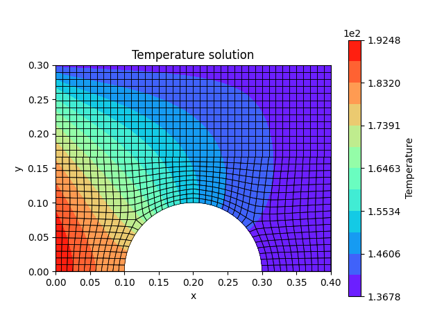
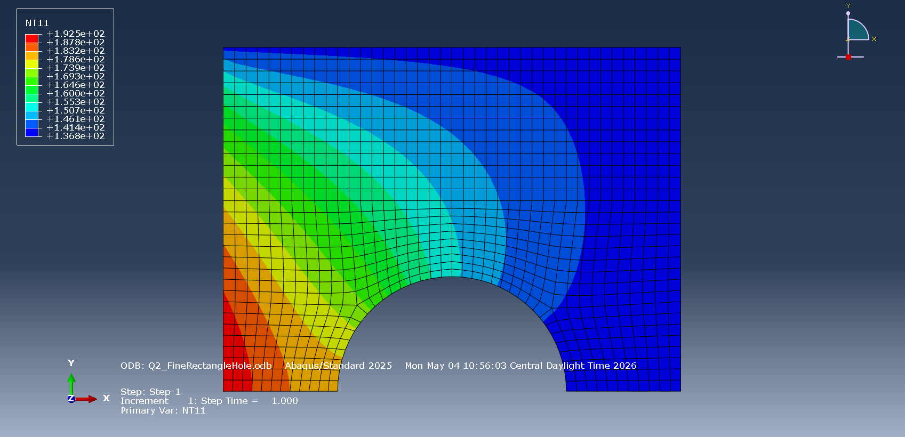
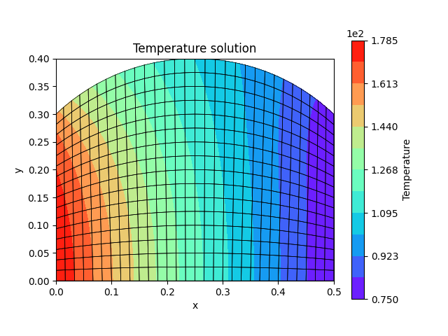
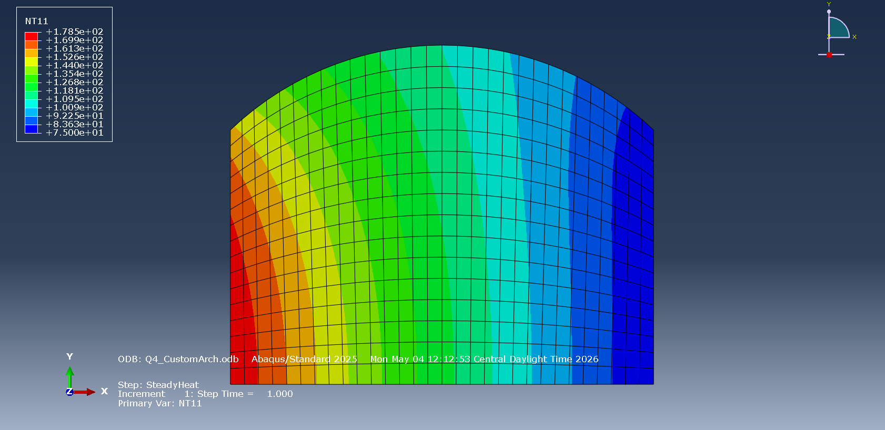
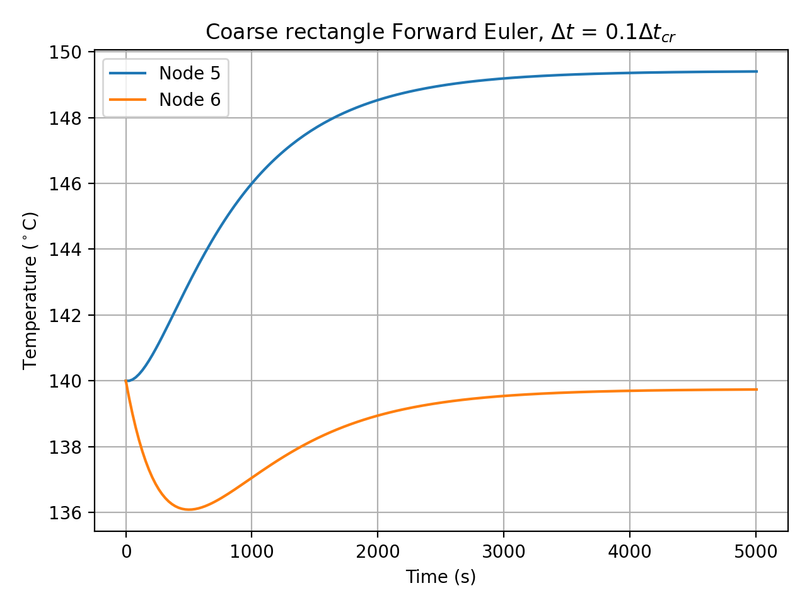
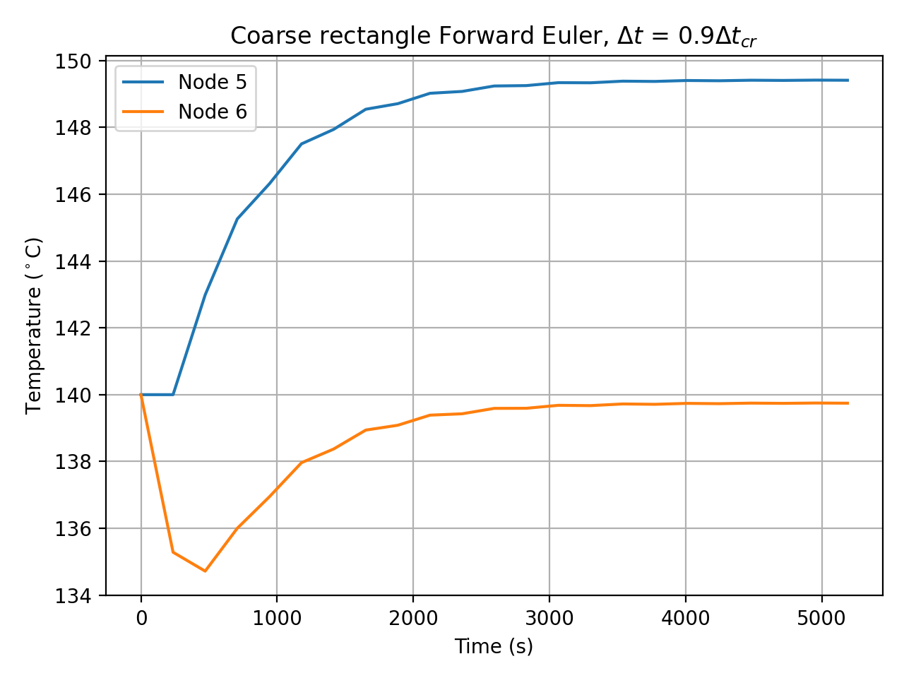
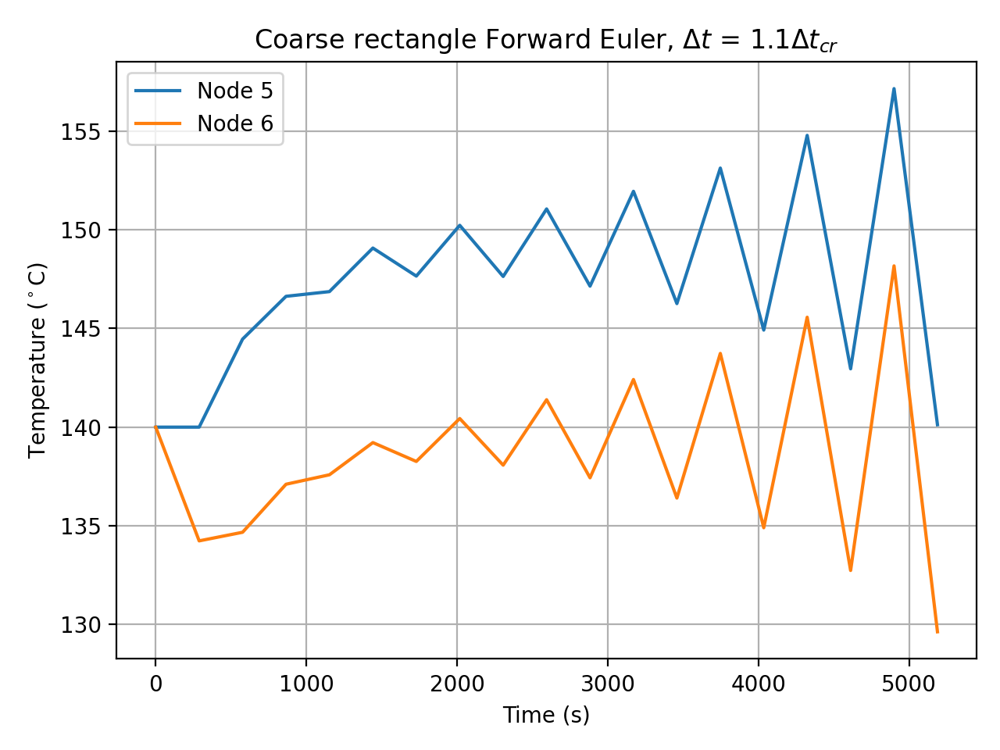

Overview
This project turned a finite element solver I’d built earlier in the semester for structural problems into a full two-dimensional thermal analysis tool, covering both steady-state and transient heat conduction. The question driving it was how much of a general FEA framework, equation numbering, assembly, and a partitioned solve, carries over to a completely different physical problem once the right element-level physics and boundary conditions are swapped in. I verified the solver at every stage against Abaqus, including on a thermal problem and mesh I designed myself rather than one that was handed to me.
What I did
The reused core of the solver was the FEA infrastructure: equation numbering, the location matrix, partitioned global assembly, and the partitioned solve. On top of that I built the physics for a steady-state thermal problem, (Kk + Kc)T = PQ + Pq + Pc, using the same isoparametric Q4 shape functions, Jacobian, and Gauss quadrature routines from the structural code, but swapping the strain-displacement matrix for a temperature-gradient matrix to form the conduction matrix. The genuinely new part was the boundary conditions: an edge-based applied heat flux, integrated as ∫ NTqpt dΓ over the loaded edge with one-dimensional Gauss quadrature, and edge-based convection, which needed both a convection matrix (row-sum lumped, per the project’s requirements) and a convection load vector.
I validated the steady-state solver against Abaqus on four meshes, coarse and fine rectangles, a distorted rectangular mesh, and a mesh with a circular hole cut into it, comparing temperature contours side by side. All four matched Abaqus closely, including the distorted and curved-hole cases, confirming that the isoparametric mapping and edge integration were working correctly on non-rectangular elements and not just the easy rectangular ones.


I also used the solver to compute heat flux across an internal edge shared by two elements, evaluated once from each element. The two values didn’t match exactly, and that’s expected: the temperature field is continuous across element boundaries, but its gradient (and therefore the heat flux, since q = −k∇T) generally isn’t. It’s a good illustration of a real FEA post-processing subtlety rather than a bug, and the mismatch would shrink under mesh refinement.
To test the solver on something it hadn’t seen, I built an entirely new steady-state problem from scratch in Abaqus CAE: an arched plate with a curved top edge, a fixed heat flux on the left edge, a fixed temperature on the right edge, a convection boundary on the curved top, and an insulated bottom, meshed with more than 100 distorted DC2D4 elements. My Python solver matched the Abaqus result closely here too, which was the real test of whether the implementation generalized past the given test cases.


The last extension was time: I added a row-sum lumped capacitance matrix and implemented two time-integration schemes, explicit Forward Euler and implicit Crank-Nicolson, to solve the transient version of the same system. For Forward Euler I computed the critical time step from the largest eigenvalue of the system matrix and deliberately ran the solver at 0.1, 0.9, and 1.1 times that critical step to show its conditional stability directly: the first two settle smoothly toward steady state, and the 1.1× case visibly oscillates and diverges, exactly as the stability theory predicts. Crank-Nicolson, run at time steps well beyond Forward Euler’s stability limit, stayed stable in every case, though accuracy visibly degraded into oscillation as the time step grew.



I ran both schemes across two different mesh cases and tracked nodal temperature histories over time as each domain heated from a uniform initial temperature toward its steady-state distribution, covering the full arc from a static conduction solve to a stable, well-behaved transient one.
Tools & methods
Wrote the full solver, equation numbering, assembly, boundary conditions, and both time-integration schemes, from scratch in Python with NumPy, building on a structural FEA codebase from earlier in the course. Used Abaqus CAE and Abaqus/Standard, including DC2D4 thermal elements, to build the custom validation geometry and mesh and to independently solve every case for comparison. Used Matplotlib for all temperature contour and transient time-history plots.
Outcome
Ended up with a working 2D thermal FEA solver that matched Abaqus temperature fields closely across five independent geometries, four given and one designed from scratch, and that correctly reproduced the textbook stability behavior of Forward Euler and Crank-Nicolson time integration, including inducing and confirming numerical instability once the Forward Euler critical time step was exceeded.